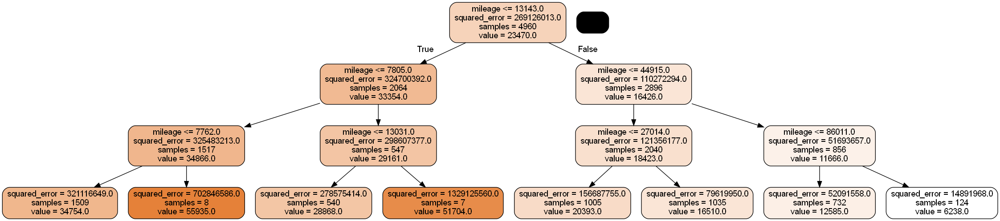
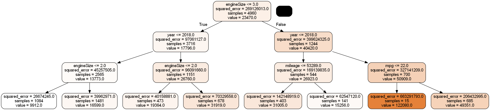

import pandas as pd
import numpy as np
import seaborn as sns
import matplotlib.pyplot as plt
from sklearn.metrics import mean_squared_error
from sklearn.model_selection import cross_val_score,train_test_split
from sklearn.metrics import mean_squared_error,r2_score
from sklearn.model_selection import KFold
from sklearn.tree import DecisionTreeRegressor
from sklearn.model_selection import GridSearchCV, ParameterGrid
#Libraries for visualizing trees
from sklearn.tree import export_graphviz
from six import StringIO
from IPython.display import Image
import pydotplus
import time as time3 Regression trees
Read section 8.1.1 of the book before using these notes.
Note that in this course, lecture notes are not sufficient, you must read the book for better understanding. Lecture notes are just implementing the concepts of the book on a dataset, but not explaining the concepts elaborately.
#Using the same datsasets as used for linear regression in STAT303-2,
#so that we can compare the non-linear models with linear regression
trainf = pd.read_csv('Car_features_train.csv')
trainp = pd.read_csv('Car_prices_train.csv')
testf = pd.read_csv('Car_features_test.csv')
testp = pd.read_csv('Car_prices_test.csv')
train = pd.merge(trainf,trainp)
test = pd.merge(testf,testp)
train.head()| carID | brand | model | year | transmission | mileage | fuelType | tax | mpg | engineSize | price | |
|---|---|---|---|---|---|---|---|---|---|---|---|
| 0 | 18473 | bmw | 6 Series | 2020 | Semi-Auto | 11 | Diesel | 145 | 53.3282 | 3.0 | 37980 |
| 1 | 15064 | bmw | 6 Series | 2019 | Semi-Auto | 10813 | Diesel | 145 | 53.0430 | 3.0 | 33980 |
| 2 | 18268 | bmw | 6 Series | 2020 | Semi-Auto | 6 | Diesel | 145 | 53.4379 | 3.0 | 36850 |
| 3 | 18480 | bmw | 6 Series | 2017 | Semi-Auto | 18895 | Diesel | 145 | 51.5140 | 3.0 | 25998 |
| 4 | 18492 | bmw | 6 Series | 2015 | Automatic | 62953 | Diesel | 160 | 51.4903 | 3.0 | 18990 |
3.1 Building a regression tree
Develop a regression tree to predict car price based on mileage
X = train['mileage']
y = train['price']#Defining the object to build a regression tree
model = DecisionTreeRegressor(random_state=1, max_depth=3)
#Fitting the regression tree to the data
model.fit(X.values.reshape(-1,1), y)DecisionTreeRegressor(max_depth=3, random_state=1)#Visualizing the regression tree
dot_data = StringIO()
export_graphviz(model, out_file=dot_data,
filled=True, rounded=True,
feature_names =['mileage'],precision=0)
graph = pydotplus.graph_from_dot_data(dot_data.getvalue())
graph.write_png('car_price_tree.png')
Image(graph.create_png())
#prediction on test data
pred=model.predict(test[['mileage']])#RMSE on test data
np.sqrt(mean_squared_error(test.price, pred))13764.798425410803#Visualizing the model fit
Xtest = np.linspace(min(X), max(X), 100)
pred_test = model.predict(Xtest.reshape(-1,1))
sns.scatterplot(x = 'mileage', y = 'price', data = train, color = 'orange')
sns.lineplot(x = Xtest, y = pred_test, color = 'blue')<AxesSubplot:xlabel='mileage', ylabel='price'>
All cars falling within the same terminal node have the same predicted price, which is seen as flat line segments in the above model curve
Develop a regression tree to predict car price based on mileage, mpg, engineSize and year
X = train[['mileage','mpg','year','engineSize']]
model = DecisionTreeRegressor(random_state=1, max_depth=3)
model.fit(X, y)
dot_data = StringIO()
export_graphviz(model, out_file=dot_data,
filled=True, rounded=True,
feature_names =['mileage','mpg','year','engineSize'],precision=0)
graph = pydotplus.graph_from_dot_data(dot_data.getvalue())
graph.write_png('car_price_tree.png')
Image(graph.create_png())
3.2 Optimizing parameters to improve the regression tree
Let us find the optimal depth of the tree and the number of terminal nods (leaves) by cross validation.
#Finding cross validation error for trees ranging from a depth of 1 to 19.
parameters = {'max_depth':range(3,20),'max_leaf_nodes':range(100,300)}
cv = KFold(n_splits = 5,shuffle=True,random_state=1)
model = GridSearchCV(DecisionTreeRegressor(random_state=1), parameters, n_jobs=-1,verbose=1,cv=cv)
model.fit(X, y)
print (model.best_score_, model.best_params_) Fitting 5 folds for each of 3400 candidates, totalling 17000 fits
0.8465176078797111 {'max_depth': 10, 'max_leaf_nodes': 262}#Detailed results of k-fold cross validation
pd.DataFrame(model.cv_results_).head()| mean_fit_time | std_fit_time | mean_score_time | std_score_time | param_max_depth | param_max_leaf_nodes | params | split0_test_score | split1_test_score | split2_test_score | split3_test_score | split4_test_score | mean_test_score | std_test_score | rank_test_score | |
|---|---|---|---|---|---|---|---|---|---|---|---|---|---|---|---|
| 0 | 0.006249 | 0.007653 | 0.009373 | 0.007653 | 3 | 100 | {'max_depth': 3, 'max_leaf_nodes': 100} | 0.66442 | 0.687745 | 0.719107 | 0.629451 | 0.738026 | 0.68775 | 0.038611 | 3201 |
| 1 | 0.012497 | 0.006248 | 0.003124 | 0.006248 | 3 | 101 | {'max_depth': 3, 'max_leaf_nodes': 101} | 0.66442 | 0.687745 | 0.719107 | 0.629451 | 0.738026 | 0.68775 | 0.038611 | 3201 |
| 2 | 0.015622 | 0.000002 | 0.000000 | 0.000000 | 3 | 102 | {'max_depth': 3, 'max_leaf_nodes': 102} | 0.66442 | 0.687745 | 0.719107 | 0.629451 | 0.738026 | 0.68775 | 0.038611 | 3201 |
| 3 | 0.012497 | 0.006248 | 0.012496 | 0.006248 | 3 | 103 | {'max_depth': 3, 'max_leaf_nodes': 103} | 0.66442 | 0.687745 | 0.719107 | 0.629451 | 0.738026 | 0.68775 | 0.038611 | 3201 |
| 4 | 0.015622 | 0.000001 | 0.000000 | 0.000000 | 3 | 104 | {'max_depth': 3, 'max_leaf_nodes': 104} | 0.66442 | 0.687745 | 0.719107 | 0.629451 | 0.738026 | 0.68775 | 0.038611 | 3201 |
#Developing the tree based on optimal parameters found by cross-validation
model = DecisionTreeRegressor(random_state=1, max_depth=10,max_leaf_nodes=262)
model.fit(X, y)DecisionTreeRegressor(max_depth=10, max_leaf_nodes=262, random_state=1)#RMSE on test data
Xtest = test[['mileage','mpg','year','engineSize']]
np.sqrt(mean_squared_error(test.price, model.predict(Xtest)))6921.0404660552895The RMSE for the decision tree is lower than that of linear regression models and spline regression models (including MARS), with these four predictors. This may be probably due to car price having a highly non-linear association with the predictors.
Predictor importance: The importance of a predictor is computed as the (normalized) total reduction of the criterion (SSE in case of regression trees) brought by that predictor.
Warning: impurity-based feature importances can be misleading for high cardinality features (many unique values) Source: https://scikit-learn.org/stable/modules/generated/sklearn.tree.DecisionTreeRegressor.html#sklearn.tree.DecisionTreeRegressor.feature_importances_
model.feature_importances_array([0.04490344, 0.15882336, 0.29739951, 0.49887369])Engine size is the most important predictor, followed by year, which is followed by mpg, and mileage is the least important predictor.
3.3 Cost complexity pruning
While optimizing parameters above, we optimized them within a range that we thought was reasonable. While doing so, we restricted ouverselves to considering only a subset of the unpruned tree. Thus, we could have missed out on finding the optimal tree (or the best model).
With cost complexity pruning, we first develop an unpruned tree without any restrictions. Then, using cross validation, we find the optimal value of the tuning parameter \(\alpha\). All the non-terminal nodes for which \(\alpha_{eff}\) is smaller that the optimal \(\alpha\) will be pruned. You will need to check out the link below to understand this better.
Check out a detailed explanation of how cost complexity pruning is implemented in sklearn at: https://scikit-learn.org/stable/modules/tree.html#minimal-cost-complexity-pruning
Here are some informative visualizations that will help you understand what is happening in cost complexity pruning: https://scikit-learn.org/stable/auto_examples/tree/plot_cost_complexity_pruning.html#sphx-glr-auto-examples-tree-plot-cost-complexity-pruning-py
model = DecisionTreeRegressor(random_state = 1)#model without any restrictions
path= model.cost_complexity_pruning_path(X,y)# Compute the pruning path during Minimal Cost-Complexity Pruning.alphas=path['ccp_alphas']len(alphas)4126start_time = time.time()
cv = KFold(n_splits = 5,shuffle=True,random_state=1)
tree = GridSearchCV(DecisionTreeRegressor(random_state=1), param_grid = {'ccp_alpha':alphas},
scoring = 'neg_mean_squared_error',n_jobs=-1,verbose=1,cv=cv)
tree.fit(X, y)
print (tree.best_score_, tree.best_params_)
total_time = time.time()-start_timeFitting 5 folds for each of 4126 candidates, totalling 20630 fits
-44150619.209031895 {'ccp_alpha': 143722.94076639024}total_time/602.332933847109477The code took 2 minutes to run on a dataset of about 5000 observations and 4 predictors.
tree = DecisionTreeRegressor(ccp_alpha=143722.94076639024,random_state=1)
tree.fit(X, y)
pred = tree.predict(Xtest)
np.sqrt(mean_squared_error(test.price, pred))7306.592294294368The RMSE for the decision tree with cost complexity pruning is lower than that of linear regression models and spline regression models (including MARS), with these four predictors. However, it is higher than the one obtained with tuning tree parameters using grid search (shown previously). Cost complexity pruning considers a completely unpruned tree unlike the ‘grid search’ method, and thus may seem to be more comprehensive than the ‘grid search’ approach. However, the ‘grid search’ approach consideres several trees unlike cost complexity pruning that considers only one tree and prunes it. Thus, both approaches have advatages over each other, and either one may provide a more accurate model.
gridcv_results = pd.DataFrame(model.cv_results_)cv_error = -gridcv_results['mean_test_score']#Vizualizing the 5-fold cross validation error vs alpha
sns.lineplot(alphas,cv_error)C:\Users\akl0407\Anaconda3\lib\site-packages\seaborn\_decorators.py:36: FutureWarning: Pass the following variables as keyword args: x, y. From version 0.12, the only valid positional argument will be `data`, and passing other arguments without an explicit keyword will result in an error or misinterpretation.
warnings.warn(<AxesSubplot:ylabel='mean_test_score'>
#Zooming in the above vizualization to see the alpha where the 5-fold cross validation error is minimizing
sns.lineplot(alphas[0:4093],cv_error[0:4093])C:\Users\akl0407\Anaconda3\lib\site-packages\seaborn\_decorators.py:36: FutureWarning: Pass the following variables as keyword args: x, y. From version 0.12, the only valid positional argument will be `data`, and passing other arguments without an explicit keyword will result in an error or misinterpretation.
warnings.warn(<AxesSubplot:ylabel='mean_test_score'>
3.3.1 Depth vs alpha; Node counts vs alpha
stime = time.time()
trees=[]
for i in alphas:
tree = DecisionTreeRegressor(ccp_alpha=i,random_state=1)
tree.fit(X, train['price'])
trees.append(tree)
print(time.time()-stime)268.10325384140015This code takes 4.5 minutes to run
node_counts = [clf.tree_.node_count for clf in trees]
depth = [clf.tree_.max_depth for clf in trees]fig, ax = plt.subplots(1, 2,figsize=(10,6))
ax[0].plot(alphas[0:4093], node_counts[0:4093], marker="o", drawstyle="steps-post")#Plotting the zoomed-in plot (ignoring very high alphas), otherwise it is hard to see the trend
ax[0].set_xlabel("alpha")
ax[0].set_ylabel("number of nodes")
ax[0].set_title("Number of nodes vs alpha")
ax[1].plot(alphas[0:4093], depth[0:4093], marker="o", drawstyle="steps-post")#Plotting the zoomed-in plot (ignoring very high alphas), otherwise it is hard to see the trend
ax[1].set_xlabel("alpha")
ax[1].set_ylabel("depth of tree")
ax[1].set_title("Depth vs alpha")
#fig.tight_layout()Text(0.5, 1.0, 'Depth vs alpha')
3.3.2 Train and test accuracies (R-squared) vs alpha
train_scores = [clf.score(X, y) for clf in trees]
test_scores = [clf.score(Xtest, test.price) for clf in trees]fig, ax = plt.subplots()
ax.set_xlabel("alpha")
ax.set_ylabel("accuracy")
ax.set_title("Accuracy vs alpha for training and testing sets")
ax.plot(alphas[0:4093], train_scores[0:4093], marker="o", label="train", drawstyle="steps-post")#Plotting the zoomed-in plot (ignoring very high alphas), otherwise it is hard to see the trend
ax.plot(alphas[0:4093], test_scores[0:4093], marker="o", label="test", drawstyle="steps-post")#Plotting the zoomed-in plot (ignoring very high alphas), otherwise it is hard to see the trend
ax.legend()
plt.show()